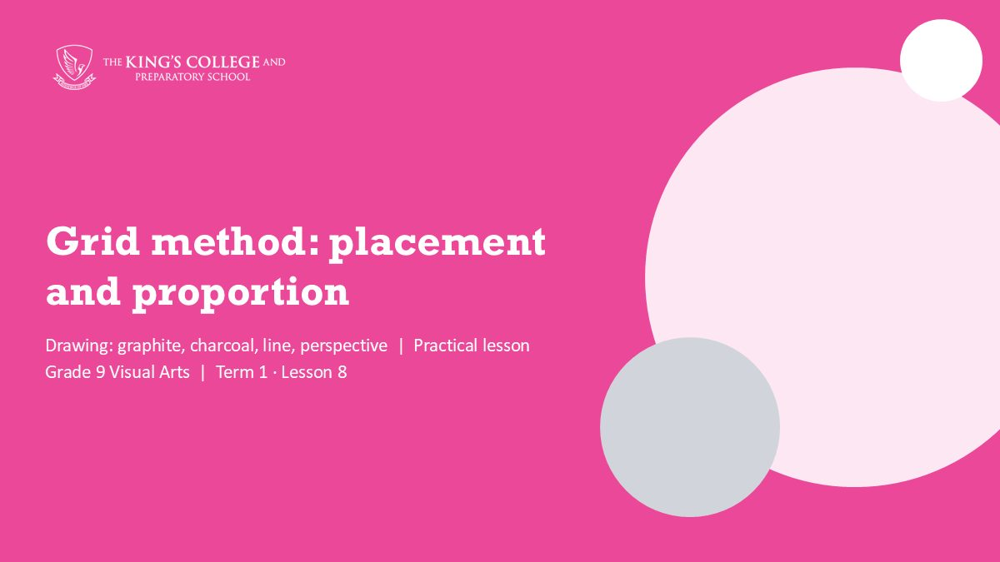

Term 1 · Lesson 8 · Practical lesson
Grid method: placement and proportion
Start here
Today I will
- Explain why artists use a grid
- Draw an accurate, light grid
- Transfer the outlines square by square in proportion
Think first
Artists centuries ago used grids to copy small drawings onto big walls. Why might a grid help you draw more accurately?
Words to Know
| Word | Meaning |
|---|---|
| Grid method | Copying or enlarging an image accurately by drawing a grid over it and a matching grid on the paper, then copying one square at a time. |
| Proportion | The size of parts compared to each other and to the whole. |
| Scale | The size of a drawing compared with the original; bigger squares make a bigger drawing. |
| Reference image | A photo or picture you look at for information while you draw. |
| Placement | Where each part sits on the page and inside each square. |
Slides

Videos
Notes
Enlarging an image accurately with a grid.
How the grid method works
- Grid the reference: Equal squares over the photo (already done on your sheet).
- Grid the paper: The same number of squares; 3 cm squares enlarge a 2 cm grid by half again.
- Label the squares: Letters across the top, numbers down the side, on both sheets.
- One square at a time: Copy only the lines inside one square, then move to the next.
Getting the grid right
- Light HB lines: Press lightly so the grid is easy to erase later.
- Measure, do not guess: Mark every 3 cm along all four edges before joining the marks.
- Check the squares: Hold the ruler firmly; a crooked grid gives a crooked face.
- Turn it upside down: Checking the drawing upside down shows mistakes in shape.
Remember
One square at a time: small shapes make an accurate whole.
Practical
You need: Visual journal, HB pencil, eraser, ruler, gridded reference photo, A4 cartridge sheet
Grid and outline transfer
- Practice square: in your visual journal, copy one 3 cm square from the photo to warm up.
- On the cartridge sheet, mark every 3 cm along all four edges with a light HB line.
- Join the marks lightly and label the squares (A, B, C… across and 1, 2, 3… down).
- Start with a square that has a clear shape, such as an eye.
- Copy the lines in each square, watching where they cross the edges of the square.
- Draw outlines and the edges of the main value shapes only; no shading yet. Store the drawing flat.
Assessment
Term 2 Assessment issued: 'John Muafangejo: art as a voice' (due Friday of Term 2, Week 3).
Test yourself
- Why does the grid method help with proportion?
- How do you make the drawing bigger than the photo?
- Why must the grid lines be light?
Show answers
1. You copy small, simple shapes in the right place in each square, so the parts stay the right size compared to each other. 2. Draw bigger squares on the paper, with the same number of squares. 3. So they are easy to erase once the drawing is shaded.
Finished early?
Mini grid transfer
Practise the grid method on a small scale.
- Draw a 3 x 3 grid of 1 cm squares on a corner of your visual journal page and draw a simple shape across it, such as a leaf or a cup.
- Next to it, draw a 3 x 3 grid of 2 cm squares with a light pencil.
- Label the squares A, B, C across and 1, 2, 3 down on both grids.
- Copy the shape one square at a time to make it twice as big.